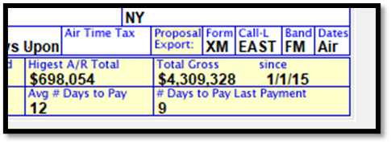
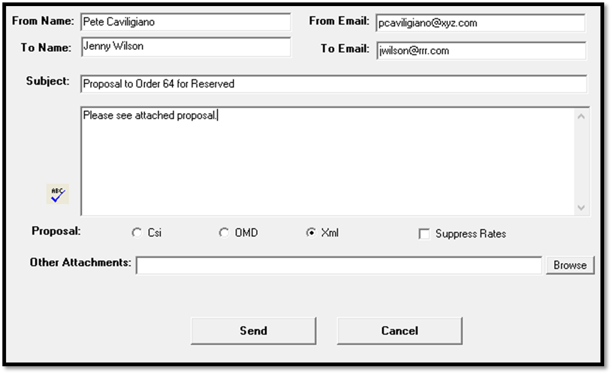

Proposal XML
Donovan, agencies and broadcasters created a standard XML file format for a proposal interface. The purpose is to allow agency systems to import Counterpoint proposals. Donovan and other agency vendors accept this format. Counterpoint has created the Proposal XML export that meets the specifications.
If you have any issues creating the XML file contact support@counterpoint.net.
Setup
Site Options
To use the Proposal XML feature, the “Proposal System” checkbox in Traffic Site Options -> Opt -> System Options must be checked on. The “Proposal XML” checkbox (also in System Options) must also be checked on.
Export Tab
EDI/XML: Call Letters, Media Type, Band: Call Letters come from the service provider. Media Type is “X” for a radio network. Band is “X” for a radio network. This field can be overridden by the band entered in the List -> Agencies band field. The valid options are: FM, AM, DV, SM and N.
Email Tab
The settings on the Email tab must also be configured to send Proposal XML files using the system email feature. Please see the help document “Traffic Site Options” that is available on the Counterpoint website for additional information about configuring the options on this screen.
Agency Setup
The Proposal Export format for each agency must be defined in the Lists -> Agency Screen.

- The Proposal Export Form has three options. On version 7.1, the selected option sets the default export type. On earlier versions, the selected option determines what export type is used. The three options are:
- XML: Proposal XML.
- OMD: Format used just for OMD agency.
- CSI: Format that when imported into Excel at the Agency, produces a Proposal that is similar to the Counterpoint printed Proposal.
- Call Letters (Call-L): When the agency is set to use the Proposal XML export form, if call letters are defined in this field, those call letters will replace the call letters (from Traffic Site Options) shown on the Proposal XML export for proposals using that agency. Call letters entered here must be three or four letters to be valid. This feature is available on version 7.1 and above only.
- Band: If using the Proposal XML export, any band entered in this field will override the band entered in the Site Options -> Exports band field. This allows agencies to to have unique bands. The valid options are FM, AM, DV, SM and N.
- Dates: This setting determines whether Monday-Sunday or Flight Air Dates are used on the Proposal XML export. The two options are “Air Dates” and “M-Sun” (available on v7.1 and above only).
Traffic.ini Setup
On version 7.0 and above, it is possible to add a path to the Traffic.ini file to specify a default save location folder for the Proposal XML export. This is an optional feature. If the Proposal XML Path is not on the Traffic.ini, the system will default the save location to the CSI folder on the root drive of the target system. In both cases, the user will still be able to browse to a non-default save destination when creating the Proposal XML file.
To specify a default save location other than the CSI folder, add the following to the entry to the Locations section of the Traffic.ini:
ProposalXMLPath = c:\proposals
Replace the path “c:\proposals” that is shown in the example with the save location the export should default to.
Procedure to Export a Proposal XML
Save the proposal before attempting to create the Proposal XML export. Alternatively, an existing proposal can be brought up in View mode.
1. With the proposal that needs to be exported on the screen, click on the Export icon to bring up the “Save As” window.
2. On version 7.1 and above, a special sub-screen appears when pressing the Export button.
3. Choose the “Use XML Format” radio button and press OK to continue.
4. On the “Save As” Browse window, a non-default save location can be chosen or it can be saved in the default location. Press the Save button to save the Proposal XML in the chosen save location.
Note that a single proposal can be exported multiple times if needed.
Procedure to Email a Proposal XML
- Display the Proposal
- Click on the Email Icon
- The “From Name” is the name used to sign into Counterpoint. This name can be edited.
- The Buyer’s email address pulled from the Buyer field on the proposal. If there is no Buyer’s email defined, you can enter or alter one in the “To Email” field.
- The “From Email” field defaults to the email address entered in the User Profile. You can edit this address if desired.
- The “To Email” field defaults to the email address entered in the Buyer’s Profile. You can edit this address if desired. You can send the proposal to additional people by separating each email address with a semi-colon.
- Subject: The subject line will automatically display the status of the Proposal. Options: Proposal, Proposal to Hold, or Proposal to Order.
- The system defaults to the proposal format entered in the Agency screen. If changed to a different format, you will be asked if you wish to permanently change the agency’s output to that format. Yes: will change all emails for the agency to this export type. No: will only change the format for the current email.
- If needed, additional attachments can be added using the Browse button.
- Click the Send Button to send the email.

Note:
- When using the XML export format, on v7.1, it’s possible to press the “Suppress Rates” checkbox to change the rate to zero on the export.
- A Proposal file is generated for the agency, and saved in the x:\csi\prod\export folder
- If that particular Buyer had no email address saved, the A/E can enter one, which will be used for the email and saved in the Buyer Name file for subsequent emails
- Proposal XML cannot accept any Proposal greater than 53 weeks. If a Proposal is greater than 53 weeks, you will receive a warning message that reads as follows: “Proposal XML cannot accept files that cover more than 53 weeks. This file spans [x] weeks. Continue anyway?” If Yes is selected, the export file will be created in the Export folder, but it will not be able to be successfully imported at the agency because of the 53 week limitation.
Proposal Information Sent
- Package schedule lines are sent (not hidden lines).
- Up to four demos (if defined) will be sent.
- If there are custom demos on the Proposal, such as Hispanic Men and Women, they will be included with the standard demo, with a comment indicating ethnicity
- Comment Codes: HW, HM, HA (Hispanic Women, Men, All), BW, BM, BA (Black Women, Men, All), UW, UM, UA (Urban Women, Men, All), SW, SM, SA (Spanish Women, Men, All).
- The following Proposal XML group names are supported: Adults (A), Men (M), Women (W), Teens (T), Children (C), Persons (P), and Homes (H).
- Lines without spots are never sent.
- NTR is never sent.
- If there is a gap in the flight, for example, week 1 has 3 spots, week 2 has zero, and week 3 has 4 spots, the file will show the start and end dates of the gap week (week 2) at zero dollars
- The start and end dates for each individual line are sent
- For example, if there is a contract with two lines and one line runs 1/1 to 3/1, and one line runs 1/1 to 5/1. The "Detailed Period" section of the Proposal XML output will include 1/1-3/1 for line 1, and 1/1-5/1 for line 2
Information Not Sent
If the option to ‘Show Impression’ is selected on the proposal, demo information will not be sent.
The following information will not be sent:
Demo Categories
Demo Category
Target Demo
Demo Values
Export Issues
There are certain data entry issues that will cause a proposal to not be sent and result in an error message. These issues can be resolved by changing the existing proposal then re-exporting the proposal.
- Too Many Buylines: This means that there are too many schedule lines on the buy itself for Proposal XML to process. To fix it, edit the number of lines on the proposal.
- Proposal Couldn’t Load: This is the result of the same demo being entered twice on the proposal. To fix it, change the existing proposal to have all unique demos.
- Invalid file: This file has more than one period types: The Starcom system does not successfully import Proposal XML files when there’s a mix of daily buy and weekly buy lines on a single contract. (Other agencies will accept a mix of daily and weekly lines.) To fix it, the proposal must be changed to only have all daily buy lines or all weekly buy lines.
Act 1 Lineup Information
Act 1 Lineup information will now be exported on the Proposal XML export when it's defined on a contract line as part of the Act 1 Lineup feature that can be enabled in Traffic Site Options. The Act 1 Lineup information will appear in the Comment section field, as shown in the example below:
<Comment>
<tvb-tp:CommentLine>Proposal line #: 1</tvb-tp:CommentLine>
<tvb-tp:CommentLine>ACT1code=123 ACT1stored=T ACT1qual=V</tvb-tp:CommentLine>
</Comment>
The following rules affect what is shown for the Act 1 Lineup information on the Proposal XML:
1. The Act 1 Lineup name will appear after the words "ACT1code", for example, if the Act 1 Lineup name is 123, then it will appear as ACT1code=123 on the Proposal XML.
2. After the Act 1 Lineup, there will be a space, followed by the words "ACT1stored=". If the Stored Times, Stored Spots, Store Clear%, and Daypart Filter are all set to No, there will be no value after the equal sign. If Stored Times is set to Yes, then the letter "T" will appear. If Stored Spots is set to Yes, then the letter "S" will appear. If Store Clear% is set to Yes, then the letter "C" will appear. If Daypart Filter is set to Yes, then the letter "F" will appear. Therefore, zero through four letters can appear after "Act1stored", depending on how many of those fields are set to Yes. For example, if Stored Times and Stored Spots are both set to Yes, and Store Clear% and Daypart Filter is set to No, then it will appear as "Act1stored=TS".
3. If the Audio Type for the contract line is set to Live or Pre-Recorded, then after the ACT1stored value, there will be a space followed by "ACT1qual=", followed by a letter "L" is the Audio Type is Live, or a letter "V" if the Audio Type is Pre-Recorded. If the Audio Type is set to Recorded, then the Act1Qual section will not be shown.
<tvb-tp:CommentLine>ACT1code=123 ACT1stored=T ACT1qual=V</tvb-tp:CommentLine>
In the example above, the Act 1 Lineup name is 123, the Stored Times value is set to Yes and the other values are set to No, and the Audio Type is set to Pre-Recorded.